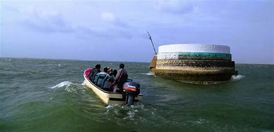

Keenjhar Lake (Kalri Lake)
The largest freshwater lake in Pakistan, a source of life and beauty in Sindh.
The largest freshwater lake in Pakistan, a source of life and beauty in Sindh.
Keenjhar Lake, also known as Kalri Lake, is located near Thatta in Sindh. It is the largest freshwater lake in Pakistan, stretching about 24 km in length and supplying drinking water to Karachi and other nearby towns.
The lake is not only an essential water source but also a popular tourist destination, offering boating, fishing, birdwatching, and a peaceful environment surrounded by nature.
Keenjhar Lake is a popular picnic spot, attracting visitors from Karachi and other parts of Sindh. People enjoy boating, fishing, swimming, and lakeside dining. The lake is also home to bird species like flamingos, herons, and ducks.
The shrine of Noori Jam Tamachi is a key attraction, visited by locals and tourists alike. Eco-tourism initiatives also highlight the lake’s biodiversity and importance as a Ramsar site (wetland of international significance).
